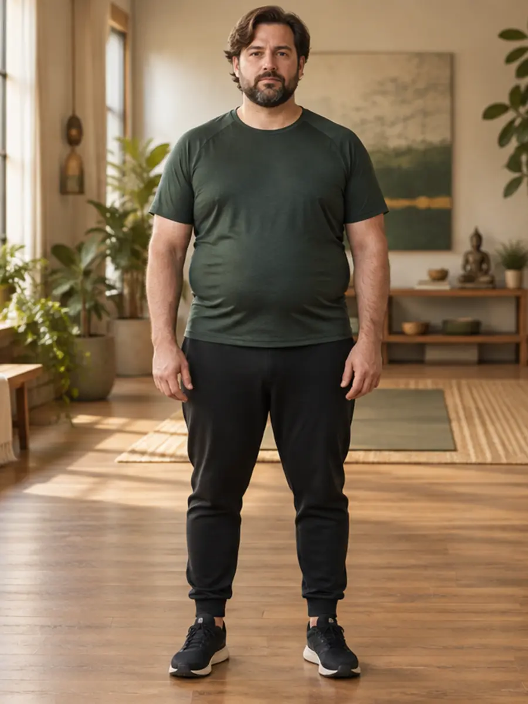
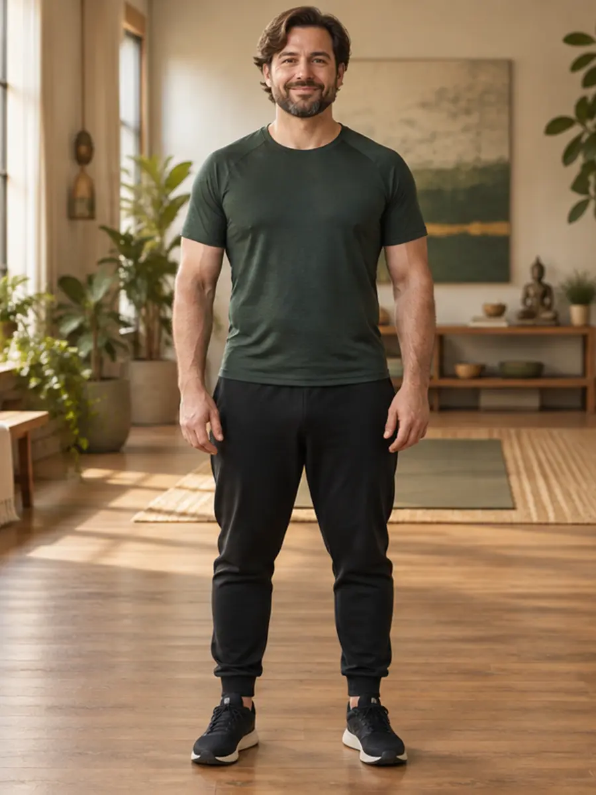
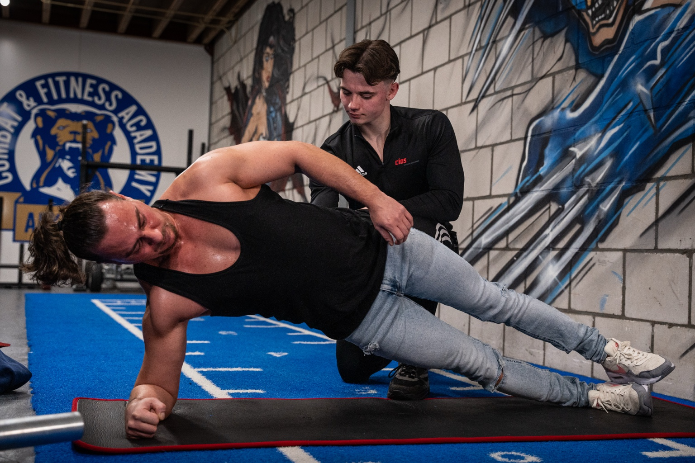
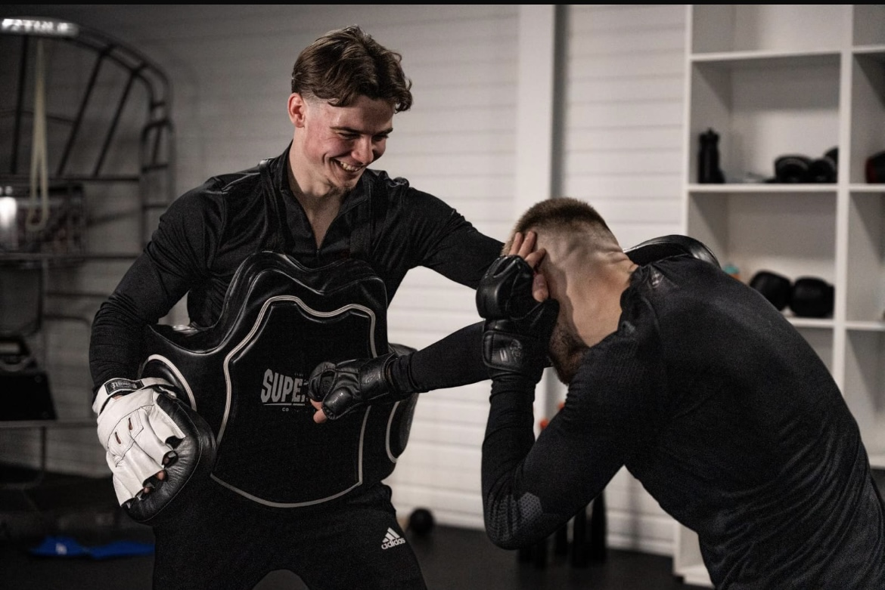
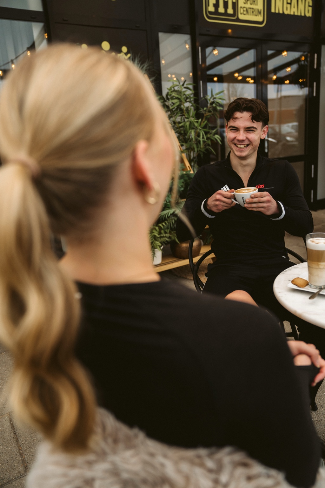
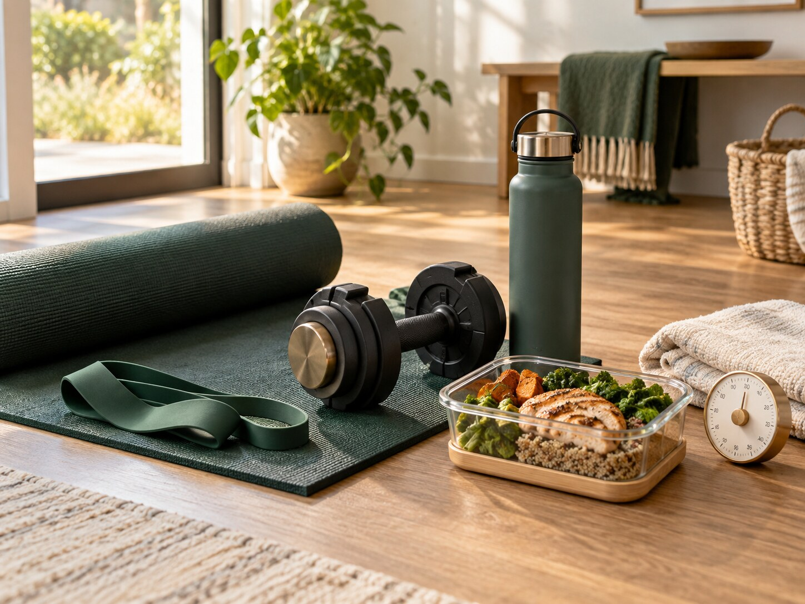

You wake up tired.
Your calling receives what is left.
PRIVATE 12-WEEK TRANSFORMATION
Become leaner, stronger and more energized—without living in the gym, following another extreme diet or figuring it out alone.
YOU ALREADY KNOW ENOUGH
Your calling receives what is left.
You keep second-guessing what to eat.
Training and meal prep disappear first.
One difficult day becomes another restart.
Low sleep drives hunger, fog and fatigue.
You know what to do—but cannot sustain it.
MEN'S TRANSFORMATION VISION


STARTING POINT POSSIBLE DIRECTIONDRAG TO REVEAL THE VISIONIllustrative visualization. Your journey and results will be personal.
WOMEN'S TRANSFORMATION VISION
DRAG TO REVEAL THE VISIONIllustrative visualization. Your journey and results will be personal.
THE DREAM OUTCOME
WHY THIS FEELS DIFFERENT
A stronger, leaner and more energized body that supports your calling.
Your real schedule, food patterns, ability and biggest bottleneck—not a generic template.
See what is draining your progress and know the first actions that matter most.
Simple meals, short workouts and a rhythm you can follow when life gets busy.

THE GODHEALTH METHOD
Restore the physical strength and energy needed to carry responsibility well.
Replace chaos and broken promises with calm, disciplined daily rhythms.
Let health become faithful stewardship—not another temporary project.
LESS INFORMATION · MORE EXECUTION
A personal intake and seven-day food review reveal the patterns keeping you stuck.
A clear meal structure and grocery direction built around foods you enjoy.
Focused home workouts with options for your time, level and ability.
Weekly review, direct feedback and one priority at a time.
REAL PEOPLE · REAL MOMENTUM
Complete client stories. Unchanged.
Life-changing experience!
I completed the 3-month program, and it has truly been a life-changing experience. One of the biggest things I learned is that I can function really well while eating much less than I used to. I also noticed that the afternoon energy crashes I used to struggle with completely disappeared after just a few weeks. This program isn’t just about food, it’s about creating a healthy lifestyle that lasts. If you’re ready to make real changes in the way you eat, move, and grow in your faith, I wholeheartedly encourage you to join. You won’t regret it. One of the most valuable parts of the journey was becoming aware of how nutrition affects your body and learning how to build healthy habits step by step. The knowledge, encouragement, and guidance you receive through GodHealth are truly a blessing and can make a lasting difference in your life.
 02 · CLIENT STORY
02 · CLIENT STORYTop results and a healthy lifestyle!
Since I started at GodHealth, I can see really clear physical progress. My body fat percentage has dropped significantly, and I’m seeing noticeable muscle definition. On top of that, my nutrition has improved tremendously; I finally have a stable, better eating pattern with the right nutrients. Highly recommended if you want to achieve serious results!
More energy and better relationship with God!
One of the things GodHealth made me realise is how my physical and spiritual life work together, Ive learned so much about nutrition and the benefits of eating God created food. Im in better shape, I feel more energy and what surprised me the most is that my relationship with God actually became stronger! I recommend everyone to be a part of GodHealth it will open up your eyes in many ways in how God intended us to take care of our bodies, so that we live a healthy and Godly life!
 04 · CLIENT STORY
04 · CLIENT STORYGreat experience!
Since I started at GodHealth, I have made a lot of progress, both physically and in my lifestyle. I feel fitter, more energetic, and have learned a lot about healthy nutrition as God intended. I have also been able to gain a much deeper insight into the connection between mind and body. I can definitely recommend GodHealth to anyone who wants to live healthier and grow, both physically and spiritually.
Personal experiences shared by GodHealth clients. Individual results vary.
THE SUPPORT BEHIND THE RESULT


Your plan starts with your life, your patterns and your biggest opportunity.
Choose primarily whole, God-created foods through a structure you can repeat.

Use simple meals, focused workouts and practical options for difficult days.
Review what happened, adjust the plan and keep moving with direct feedback.
THE 12-WEEK PATH
Identify the habits and health leaks creating the most friction.
Create early wins through the few actions that matter most.
Strengthen your food, training, sleep and spiritual rhythms.
Leave with a system you understand and can continue independently.
WHY TRUST ROBIN?
Robin combines Biblical stewardship with professional lifestyle coaching and the discipline that helped him become second in the Netherlands in hurdles—then translates it into a simple system for real life.
THIS IS FOR YOU IF…
NOT FOR YOU IF…
BEFORE YOU BOOK
No. The journey combines training, nutrition, recovery, habits, faith and accountability. The goal is a sustainable lifestyle—not temporary restriction.
Yes. The system is designed around real work, family and ministry responsibilities. Your plan is adapted to your available time and current ability.
The investment is discussed privately after Robin understands your goals and confirms that the journey is an appropriate fit. The Strategy Call itself is complimentary and carries no obligation.
We discuss your goals, what has kept you stuck and what needs to change. If the journey is a strong fit, Robin will explain the next steps. If it is not, you will still leave with greater clarity.
No. GodHealth provides lifestyle coaching and does not replace medical care.
YOUR NEXT STEP
This is a calm, practical conversation—not a pressured sales call. We will look at where you are, what is blocking progress and whether this Journey genuinely fits.